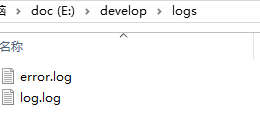
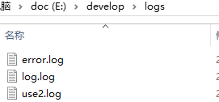
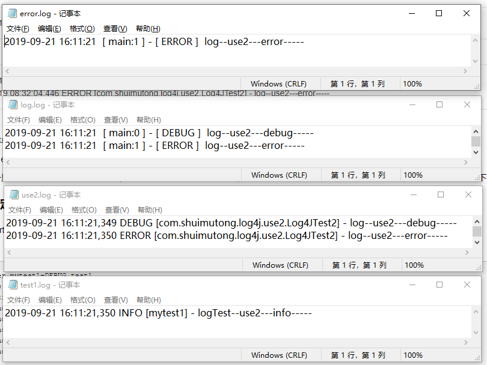
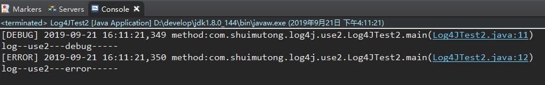
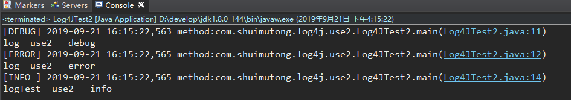

工作一直使用日志组件，但是配置却一直看的糊里糊涂的，只记得个日志级别，其他的都不太理解，例如，一个页面日志太多，怎么样能单独打印？所以就找机会整理了一下。
本文参考：https://www.cnblogs.com/xiaobaizhiqian/p/7956690.html、https://www.cnblogs.com/wangzhuxing/p/7753420.html
搜了很多文章，这些文章乍看起来，都有点不知所云。但是仔细阅读，发现还是比较有用的。为了能够更好的掌握log4j的使用，我也不免俗的加上这些乍看起来不知所云的东西。
#根据不同包配置不同的日志
log4j.logger.包名=DEBUG,别名
log4j.appender.别名 =org.apache.log4j.RollingFileAppender
log4j.appender.别名 .File=${catalina.home}/webapps/webFrameWork/WEB-INF/logs/Controller.log //路径以及日志名称
log4j.appender.别名 .layout=org.apache.log4j.PatternLayout
log4j.appender.别名 .layout.ConversionPattern=%-4r %d{yyyy-MM-dd HH:mm:ss,SSS} [%t] %-5p %c %x - %m%n
#######Log4J配置文件的基本格式如下：##################
#配置根Logger
log4j.rootLogger = [ level ] , appenderName1 , appenderName2 , …
#配置日志信息输出目的地Appender
log4j.appender.appenderName = fully.qualified.name.of.appender.class
log4j.appender.appenderName.option1 = value1
…
log4j.appender.appenderName.optionN = valueN
#配置日志信息的格式（布局）
log4j.appender.appenderName.layout = fully.qualified.name.of.layout.class
log4j.appender.appenderName.layout.option1 = value1
…
log4j.appender.appenderName.layout.optionN = valueN
###########其中 [level] 是日志输出级别，共有5级
FATAL 0
ERROR 3
WARN 4
INFO 6
DEBUG 7
#############Appender 为日志输出目的地，Log4j提供的appender有以下几种：################
org.apache.log4j.ConsoleAppender（控制台），
org.apache.log4j.FileAppender（文件），
org.apache.log4j.DailyRollingFileAppender（每天产生一个日志文件），
org.apache.log4j.RollingFileAppender（文件大小到达指定尺寸的时候产生一个新的文件），
org.apache.log4j.WriterAppender（将日志信息以流格式发送到任意指定的地方）
###############Layout：日志输出格式，Log4j提供的layout有以下几种：
org.apache.log4j.HTMLLayout（以HTML表格形式布局），
org.apache.log4j.PatternLayout（可以灵活地指定布局模式），
org.apache.log4j.SimpleLayout（包含日志信息的级别和信息字符串），
org.apache.log4j.TTCCLayout（包含日志产生的时间、线程、类别等等信息）
#########打印参数: Log4J采用类似C语言中的printf函数的打印格式格式化日志信息，如下:######################
%m 输出代码中指定的消息
%p 输出优先级，即DEBUG，INFO，WARN，ERROR，FATAL
%r 输出自应用启动到输出该log信息耗费的毫秒数
%c 输出所属的类目，通常就是所在类的全名
%t 输出产生该日志事件的线程名
%n 输出一个回车换行符，Windows平台为“/r/n”，Unix平台为“/n”
%d 输出日志时间点的日期或时间，默认格式为ISO8601，也可以在其后指定格式，比如：%d{yyy MMM dd HH:mm:ss , SSS}，输出类似：2002年10月18日 22 ： 10 ： 28 ， 921
%l 输出日志事件的发生位置，包括类目名、发生的线程，以及在代码中的行数。举例：Testlog4.main(TestLog4.java: 10 ) <dependency>
<groupId>org.slf4j</groupId>
<artifactId>slf4j-api</artifactId>
<version>1.7.12</version>
</dependency>
<dependency>
<groupId>org.slf4j</groupId>
<artifactId>slf4j-log4j12</artifactId>
<version>1.7.21</version>
</dependency>
<dependency>
<groupId>org.apache.logging.log4j</groupId>
<artifactId>log4j-api</artifactId>
<version>2.12.1</version>
</dependency>
<dependency>
<groupId>org.apache.logging.log4j</groupId>
<artifactId>log4j-core</artifactId>
<version>2.12.1</version>
</dependency>log4j.properties文件放到src/main/resources路径下面，具体配置请继续往下看。
1、log4j.properties配置
### \u8BBE\u7F6E###
log4j.rootLogger = debug,stdout,D,E
### \u8F93\u51FA\u4FE1\u606F\u5230\u63A7\u5236\u62AC ###
log4j.appender.stdout = org.apache.log4j.ConsoleAppender
log4j.appender.stdout.Target = System.out
log4j.appender.stdout.layout = org.apache.log4j.PatternLayout
log4j.appender.stdout.layout.ConversionPattern = [%-5p] %d{yyyy-MM-dd HH:mm:ss,SSS} method:%l%n%m%n
### \u8F93\u51FADEBUG \u7EA7\u522B\u4EE5\u4E0A\u7684\u65E5\u5FD7\u5230=E://logs/error.log ###
log4j.appender.D = org.apache.log4j.DailyRollingFileAppender
log4j.appender.D.File = E://develop/logs/log.log
log4j.appender.D.Append = true
log4j.appender.D.Threshold = DEBUG
log4j.appender.D.layout = org.apache.log4j.PatternLayout
log4j.appender.D.layout.ConversionPattern = %-d{yyyy-MM-dd HH:mm:ss} [ %t:%r ] - [ %p ] %m%n
### \u8F93\u51FAERROR \u7EA7\u522B\u4EE5\u4E0A\u7684\u65E5\u5FD7\u5230=E://logs/error.log ###
log4j.appender.E = org.apache.log4j.DailyRollingFileAppender
log4j.appender.E.File =E://develop/logs/error.log
log4j.appender.E.Append = true
log4j.appender.E.Threshold = ERROR
log4j.appender.E.layout = org.apache.log4j.PatternLayout
log4j.appender.E.layout.ConversionPattern = %-d{yyyy-MM-dd HH:mm:ss} [ %t:%r ] - [ %p ] %m%n备注：不要问我unicode码是啥，我也不记得了。
2、代码
package com.shuimutong.log4j.use1;
import org.slf4j.Logger;
import org.slf4j.LoggerFactory;
public class Log4JTest1 {
private final static Logger log = LoggerFactory.getLogger(Log4JTest1.class);
private final static Logger logTest = LoggerFactory.getLogger("mytest1");
public static void main(String[] args) {
log.debug("log-----debug-----");
log.error("log-----error-----");
logTest.info("logTest-----info-----");
}
}3、执行控制台打印
[DEBUG] 2019-09-19 08:25:35,934 method:com.shuimutong.log4j.use1.Log4JTest1.main(Log4JTest1.java:11)
log-----debug-----
[ERROR] 2019-09-19 08:25:35,934 method:com.shuimutong.log4j.use1.Log4JTest1.main(Log4JTest1.java:12)
log-----error-----
[INFO ] 2019-09-19 08:25:35,934 method:com.shuimutong.log4j.use1.Log4JTest1.main(Log4JTest1.java:14)
logTest-----info-----
4、日志文件

5、日志内容
1）log.log
2019-09-19 08:25:35 [ main:0 ] - [ DEBUG ] log-----debug-----
2019-09-19 08:25:35 [ main:0 ] - [ ERROR ] log-----error-----
2019-09-19 08:25:35 [ main:0 ] - [ INFO ] logTest-----info-----
2）error.log
2019-09-19 08:25:35 [ main:0 ] - [ ERROR ] log-----error-----
6、结论
达到预期
1、log4j.properties配置
### \u8BBE\u7F6E###
log4j.rootLogger = debug,stdout,D,E
### \u8F93\u51FA\u4FE1\u606F\u5230\u63A7\u5236\u62AC ###
log4j.appender.stdout = org.apache.log4j.ConsoleAppender
log4j.appender.stdout.Target = System.out
log4j.appender.stdout.layout = org.apache.log4j.PatternLayout
log4j.appender.stdout.layout.ConversionPattern = [%-5p] %d{yyyy-MM-dd HH:mm:ss,SSS} method:%l%n%m%n
### \u8F93\u51FADEBUG \u7EA7\u522B\u4EE5\u4E0A\u7684\u65E5\u5FD7\u5230=E://logs/error.log ###
log4j.appender.D = org.apache.log4j.DailyRollingFileAppender
log4j.appender.D.File = E://develop/logs/log.log
log4j.appender.D.Append = true
log4j.appender.D.Threshold = DEBUG
log4j.appender.D.layout = org.apache.log4j.PatternLayout
log4j.appender.D.layout.ConversionPattern = %-d{yyyy-MM-dd HH:mm:ss} [ %t:%r ] - [ %p ] %m%n
### \u8F93\u51FAERROR \u7EA7\u522B\u4EE5\u4E0A\u7684\u65E5\u5FD7\u5230=E://logs/error.log ###
log4j.appender.E = org.apache.log4j.DailyRollingFileAppender
log4j.appender.E.File =E://develop/logs/error.log
log4j.appender.E.Append = true
log4j.appender.E.Threshold = ERROR
log4j.appender.E.layout = org.apache.log4j.PatternLayout
log4j.appender.E.layout.ConversionPattern = %-d{yyyy-MM-dd HH:mm:ss} [ %t:%r ] - [ %p ] %m%n
log4j.logger.com.shuimutong.log4j.use2=DEBUG,luse2
log4j.appender.luse2.Threshold=debug
log4j.appender.luse2=org.apache.log4j.FileAppender
log4j.appender.luse2.File = E://develop/logs/use2.log
log4j.appender.luse2.layout=org.apache.log4j.PatternLayout
log4j.appender.luse2.layout.ConversionPattern=%d %p [%c] - %m%n2、代码
package com.shuimutong.log4j.use2;
import org.slf4j.Logger;
import org.slf4j.LoggerFactory;
public class Log4JTest2 {
private final static Logger log = LoggerFactory.getLogger(Log4JTest2.class);
private final static Logger logTest = LoggerFactory.getLogger("mytest1");
public static void main(String[] args) {
log.debug("log--use2---debug-----");
log.error("log--use2---error-----");
logTest.info("logTest--use2---info-----");
}
}期望：com.shuimutong.log4j.use2包下的日志单独输出
3、执行控制台打印
[DEBUG] 2019-09-19 08:32:04,446 method:com.shuimutong.log4j.use2.Log4JTest2.main(Log4JTest2.java:11)
log--use2---debug-----
[ERROR] 2019-09-19 08:32:04,446 method:com.shuimutong.log4j.use2.Log4JTest2.main(Log4JTest2.java:12)
log--use2---error-----
[INFO ] 2019-09-19 08:32:04,446 method:com.shuimutong.log4j.use2.Log4JTest2.main(Log4JTest2.java:14)
logTest--use2---info-----
4、日志文件

5、 日志内容
1）log.log
2019-09-19 08:32:04 [ main:0 ] - [ DEBUG ] log--use2---debug-----
2019-09-19 08:32:04 [ main:0 ] - [ ERROR ] log--use2---error-----
2019-09-19 08:32:04 [ main:0 ] - [ INFO ] logTest--use2---info-----
2）error.log
2019-09-19 08:32:04 [ main:0 ] - [ ERROR ] log--use2---error-----
3）use2.log
2019-09-19 08:32:04,446 DEBUG [com.shuimutong.log4j.use2.Log4JTest2] - log--use2---debug-----
2019-09-19 08:32:04,446 ERROR [com.shuimutong.log4j.use2.Log4JTest2] - log--use2---error-----
6、结论
指定包名的日志单独输出到了use2.log文件下。
但是，log.log、error.log文件里也出现了，一个记录出现了多份。
如果，一个服务里有一个处理流程打印日志很多，干扰到了其他逻辑的日志查看，我想把这个流程的日志“只”打印到指定文件，怎么做？请继续往下看。
1、log2j.properties
增加以下配置：
log4j.logger.mytest1=DEBUG,test1
#参考：https://blog.csdn.net/xingxingmingyue/article/details/90515777
log4j.additivity.mytest1=false
log4j.appender.test1.Threshold=debug
log4j.appender.test1=org.apache.log4j.FileAppender
log4j.appender.test1.File = E://develop/logs/test1.log
log4j.appender.test1.layout=org.apache.log4j.PatternLayout
log4j.appender.test1.layout.ConversionPattern=%d %p [%c] - %m%n注意，这段配置的核心就是“log4j.additivity.mytest1=false”这行，这里写的是“mytest1”，而不是别名“test1”，这一点很重要。我最开始配置的时候总是不生效，最后才发现问题出在了这里。
2、代码
Log4JTest2 代码没有变3、日志内容

结果：mytest1类型日志只打印在了test1.log文件中
4、控制台打印

现象： mytest1类型日志没有在控制台打印。
那么问题来了，我如果配置了单独打印，而且在本地调试，难道说还得看日志文件吗？
请继续往下看。
1、log4j.properties
将“目标3”中的配置改为下面的配置。
log4j.logger.mytest1=DEBUG,test1,mconsole
#https://blog.csdn.net/xingxingmingyue/article/details/90515777
log4j.additivity.mytest1=false
log4j.appender.test1.Threshold=debug
log4j.appender.test1=org.apache.log4j.FileAppender
log4j.appender.test1.File = E://develop/logs/test1.log
log4j.appender.test1.layout=org.apache.log4j.PatternLayout
log4j.appender.test1.layout.ConversionPattern=%d %p [%c] - %m%n
log4j.appender.mconsole = org.apache.log4j.ConsoleAppender
log4j.appender.mconsole.Target = System.out
log4j.appender.mconsole.layout = org.apache.log4j.PatternLayout
log4j.appender.mconsole.layout.ConversionPattern = [%-5p] %d{yyyy-MM-dd HH:mm:ss,SSS} method:%l%n%m%n
其实就是增加了一个console的appender。
2、代码
Log4JTest2 代码没有变3、控制台打印

结果：控制台打印了mytest1类型的日志。